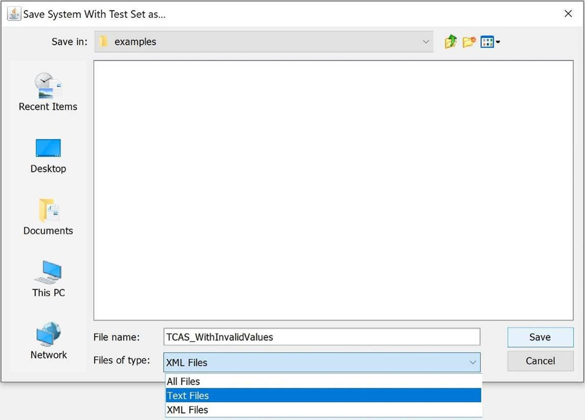

User Guide for ACTS
ACTS is a test generation tool for constructing t-way combinatorial test sets. Currently, it supports t-way test set generation with t ranging from 1 to 6. Combinatorial testing has been shown very effective in detecting faults that are caused by unexpected interactions between different factors. The tool provides three interfaces, including Graphic User Interface, Command Line Interface (CLI) and Application Programming Interface (API).
This document is organized as follows. Section 1 provides an overview of the core features of ACTS. Section 2 provides information about the command line interface. Section 3 provides information about the GUI interface. The API interface is provided in a separate document.
1 Core Features
1.1 T-Way Test Set Generation
This is the core feature of ACTS. A system is specified by a set of parameters and their values. A test set is a t-way test set if it satisfies the following property: Given any t parameters (out of all the parameters) of a system, every combination of values of these t parameters is covered in at least one test in the test set.
Currently, ACTS supports t-way test set generation for 1 ¡Ü t ¡Ü 6. Empirical studies show that t being up to 6 is sufficient for most practical applications. A special form of 1-way testing, called base-choice testing, is implemented in ACTS. Base-choice testing requires that every parameter value be covered at least once and in a test in which all the other values are base choices. Each parameter has one or more values designated as base choices. Informally, base choices are ¡°more important¡± values, e.g., default values, or values that are used most often in operation.
Several test generation algorithms are implemented in ACTS. These algorithms include IPOG, IPOG-D, IPOG-F, IPOG-F2. In general, IPOG, IPOG-F, and IPOG-F2 work best for systems of moderate size (less than 20 parameters and 10 values per parameter on average), while IPOG-D is preferred for larger systems. Note that IPOG-D and IPOG-F2 do not support mixed strength, constraint, or negative testing.
ACTS supports two test generation modes, namely, scratch and extend. The former allows a test set to be built from scratch, whereas the latter allows a test set to be built by extending an existing test set. In the extend mode, an existing test set can be a test set that is generated by ACTS, but is incomplete because of some newly added parameters and values, or because of a test set that is supplied by the user and imported into ACTS. Extending an existing test set can save earlier effort that has already been spent in the testing process.
1.2 Mixed Strength
This feature allows different parameter groups to be created and covered with different strengths. For example, consider a system consisting of 10 parameters, P1, P2, ¡, and P10. The first relation can be created that consists of all the parameters with strength 2. Then, additional relations can be created if some parameters are believed to have a higher degree of interaction, based on the user¡¯s domain knowledge. For instance, a relation could be created that consists of P2, P4, P5, P7, P8 with strength 3 if the four parameters are closely related to each other, and their 3-way interactions could trigger certain software faults. ACTS allows arbitrary parameter relations to be created, where different relations may overlap or subsume each other. In the latter case, relations that are subsumed by other relations will be ignored by the test generation engine. Mixed strength is only supported by the IPOG and IPOG-F algorithm.
1.3 Constraint Support
Some combinations are not valid from the domain semantics, and must be excluded from the resulting test set. For example, when we want to make sure a web application can run in different Internet browsers and on different Operating Systems, the configuration of IE on Mac OS is not a valid combination. A test that contains an invalid combination will be rejected by the system (if adequate input validation is performed) or may cause the system to fail. In either case, the test will not be executed properly, which may compromise test coverage, if some (valid) combinations are only covered by this test.
ACTS allows the user to specify constraints that combinations must satisfy to be valid. The specified constraints will be taken into account during test generation so that the resulting test set will cover, and only cover, combinations that satisfy these constraints. Currently, constraint support is only available for the IPOG and IPOG-F algorithm. Constraint support for other algorithms will be added in a future release.
1.4 Negative Testing
Negative testing, which is also referred to as robustness testing, is used to test whether a system handles invalid inputs correctly. ACTS allows the user to designate some values of a parameter as invalid values. During test generation, ACTS ensures that each test contains at most one invalid value. This is to avoid potential masking effect between invalid values. In addition, ACTS ensures that every invalid value is combined with every (t-1)-way combination of valid values. Currently, t-way negative testing is only supported in the IPOG and IPOG-F algorithm. Note that, due to the characteristic of base-choice testing, it can work on both valid and invalid values to generate a special form of 1-way positive and negative tests.
1.5 Coverage Verification
This feature is used to verify whether a test set satisfies t-way coverage, i.e. whether it covers all the t-way combinations. A test set to be verified can be a test set generated by ACTS or a test set supplied by the user (and then imported into ACTS).
2 Command Line Interface
There is a jar file for both command line mode and GUI mode. In this section, we assume that the jar file is named acts.jar. (The actual jar files names in the release package may be different.) The command line mode can be executed using the following command[1]:
java <options> -jar acts.jar <input_filename> [output_filename]
Alternatively, the command line mode can also be executed by using classpath:
java <options> -cp acts.jar edu.uta.cse.fireeye.console.ActsConsoleManager <input_filename> [output_filename]
The various options are:
|
-Dalgo=ipog|ipog_d|ipof|ipof2|basechoice|null
-Ddoi=<int>
-Doutput=numeric|nist|csv|excel
-Dmode=scratch|extend
-Dchandler=no|solver|forbiddentuples
-Dcheck=on|off
-Dprogress=on|off
-Ddebug=on|off
-Drandstar=on|off
-Dcombine=<all>
|
The above usage information can be displayed using the following command:
java -jar acts.jar -h
In the command line, <input_file> contains the configuration information of the system to be tested. There are two supported formats of input file: XML and TXT. Configuration file in these two formats can be formally created or modified via GUI. If the user wants to manually create a file for CLI execution, we suggest to use the TXT format, instead of the XML format. The TXT format of a configuration file is illustrated using the following example:
|
[System] -- specify system name Name: TCAS
[Parameter] -- general syntax is parameter_name (type) : value1, value2, ... Cur_Vertical_Sep (int) : 299, 300, 601 High_Confidence (boolean) : TRUE, FALSE Two_of_Three_Reports_Valid (boolean) : TRUE, FALSE Own_Tracked_Alt (int) : 1, 2 Other_Tracked_Alt (int) : 1, 2 Own_Tracked_Alt_Rate (int) : 600, 601 Alt_Layer_Value (int) : 0, 1, 2, 3 Up_Separation (int) : 0, 399, 400, 499, 500, 639, 640, 739, 740, 840 Down_Separation (int) : 0, 399, 400, 499, 500, 639, 640, 739, 740, 840 Other_RAC (enum) : NO_INTENT, DO_NOT_CLIMB, DO_NOT_DESCEND Other_Capability (enum) : TCAS_TA, OTHER Climb_Inhibit (boolean) : TRUE, FALSE
[Relation] -- this section is optional -- general format Rx : (p1, p2, ..., pk, Strength) R1 : (Cur_Vertical_Sep, Up_Separation, Down_Separation, 3)
[Constraint] -- this section is also optional Cur_Vertical_Sep != 299 => Other_Capability != "OTHER" Climb_Inhibit = true => Up_Separation > 399
[Test Set] -- set existing test set for extend mode. this is also optional -- * represents don't-care value Cur_Vertical_Sep, Other_Tracked_Alt, Alt_Layer_Value, Climb_Inhibit 299,1,0,false
|
Currently, three parameter types are supported: enum, bool (boolean), and int (integer). Note that types bool and enum are case insensitive. Also, type int supports negative values. Lines beginning with -- represents comments that exist only to improve the readability of the configuration file.
In order to support negative testing and base-choice testing (since ACTS 3.0), the user may add invalid parameter values and may designate some values as base choices, as shown below:
¡
[Parameter]
¡.
Cur_Vertical_Sep (int) : [299], [300], 601 ; -1, -2
High_Confidence (boolean) : [TRUE], FALSE
...
Other_Capability (enum) : [TCAS_TA], OTHER ; InvalidStr
¡
As shown above, invalid values are specified after valid values with a semicolon separating them. Note that each parameter must have at least one valid value, but it may or may not have any invalid values. The Boolean type parameter cannot have any invalid value. Square bracket is used to indicate that a value is a base-choice value. A parameter can have one or more base-choice values. Base-choice values must be valid values.
The default heap size for the Java Virtual Machine may not be adequate for large configurations. The user is recommended to change the default heap size, if necessary, using the following command:
java -Xms <initial heap size> -Xmx <max heap size> <options> -jar acts.jar <input_file> [output_file]
The following command can be used to save the progress information displayed on the console:
java <options> -Dprogress=on -jar acts.jar <input_file> [output_file] > progress.log
3 GUI Interface
There are two ways to launch the GUI. One way is to double-click the jar file, which is executable. The other way is to execute the jar file on the command prompt as follows:
java -jar acts.jar
The following command can be used to change the default heap size for java virtual machine, if necessary:
java -Xms <initial heap size> -Xmx <max heap size> <options> -jar acts.jar
Figs. 1 and 2 show the general layout of the ACTS GUI. The System View component is a tree structure that shows the configurations of the systems that are currently open in the GUI. In the tree structure, each system is shown as a three-level hierarchy. That is, each system (top level) consists of a set of parameters (second level), each of which has a set of values (leaf level). If a system has relations and constraints, they will be shown in the same level as parameters. Note that base-choice values are shown in bold, and invalid values are shown in red color.
Right to the System View is a tabbed pane consisting of two tabs, namely, Test Result, which is shown in Fig. 1, and Statistics, which is shown in Fig. 2. The Test Result shows a test set of the currently selected system, where each row represents a test, and each column represents a parameter. Output parameters are also displayed as columns. The Statistics tab displays some statistical information about the test set. In particular, it includes a graph that plots the growth rate of the test coverage with respect to the tests in the test set displayed in the Test Result tab. Drawing the graph may involve expensive computations, and thus the graph is shown only on demand, i.e. when the Graph button is clicked.
Figure 1. The Main Window - Test Result Tab
Figure 2. The Main Window - Statistics Tab
3.1 Create New System
To create a new system, select menu System -> New, or the first icon in the toolbar, to open the New System window. The New System window contains a tabbed pane of three tabs, namely, Parameters, Constraints and Relations. The three tabs are shown in Figs. 3, 4 and 5, respectively.
The Parameters tab (Fig. 3) allows the user to specify the parameters, as well as the values of those parameters, in the new system. Currently, four parameter types are supported, Boolean, Enum, Number, and Range. Range is a convenience feature that allows multiple, consecutive integers to be input quickly. Note that parameter names cannot contain spaces. (The characters that can be contained in a parameter name are the same as those in a variable name in Java programs.)
A base-choice value can be designed by selecting a value and clicking the ¡°Base Choice¡± button. If the selected value is already a base-choice value, then clicking ¡°Base Choice¡± will make it no longer a base-choice value. Similarly, the designation of an invalid value can be made or removed by clicking the ¡°Invalid Value¡± button. Note that no invalid value can be specified for a Boolean parameter, since it can only be true or false.
Figure 3. New System Window - Parameters
Note that ACTS reserves as separators four special chars, i.e., Comma, Semicolon, Double Quote and Backslash. Thus, the user cannot use these chars in a parameter value.
The Constraints tab (Fig. 4) allows the user to specify constraints so that invalid combinations can be excluded from the resulting test set. Note that both positive and negative tests need to satisfy all the constraints. Generally speaking, a constraint is specified using a restricted form of first-order logical formulas. In the following, we give a formal syntax of the expressions that can be used to specify a constraint:
|
There are three types of operators: (1) Boolean operators (Boolean_Op), including &&, ||, =>; (2) Relational operators (Relational_Op), including =, !=, >, <, >=, <=; and (3) Arithmetic operators (Arithmetic_OP), including +, -, *, /, %. Note that arithmetic operators can appear in a term expression (<Term>) only if the parameters involved in the term expression are of type Number or Range. Also, four of the relational operators, namely, >, <, >=, <=, can appear in a simple constraint expression (Simple_Constraint) only if both of the terms involved in the simple constraint are evaluated to a parameter value of type Number or Range. <Value> indicates a parameter value. Note that parameter values that are strings (i.e., Enum type) in a constraint must be quoted in double quotes, i.e. "; otherwise, they are considered to be parameter names. Note that the precedence of the Boolean operators is defined from highest to lowest as follows: &&, ||, =>. Meanwhile, parentheses can be used to change the order of evaluation.
The following are examples of various constraints that can be specified:
Constraint 1: (OS = "Windows") => (Browser = "IE" || Browser = "FireFox" || Browser = "Netscape"), where OS and Browser are two parameters of type Enum. This constraint specifies that if OS is Windows, then Browser must be IE, FireFox, or Netscape.
Constraint 2: (P1 > 100) || (P2 > 100), where P1 and P2 are two parameters of type Number or Range. This constraint specifies that P1 or P2 must be greater than 100.
Constraint 3: (P1 > P2) => (P3 > P4), where P1, P2, P3, and P4 are parameters of type Number or Range. This constraint specifies that if P1 is greater than P2, then P3 must be greater than P4.
Constraint 4: (P1 = true || P2 >= 100) => (P3 = "ABC"), where P1 is a Boolean parameter, P2 is a parameter of type Number or Range, and P3 is of type Enum. This constraint specifies that if P1 is true or P2 is no less than 100, then P3 must be "ABC".
A constraint can be directly typed in the Constraint Editor. The user is provided with the system configuration and the operators that can be used. The left-hand side of the Constraint window displays the system configuration in a table format and the operators on the top of the system configuration table. The right bottom of this frame shows all the added constraints. By clicking the button ¡°Load From File¡±, one may load constraints from a plain txt file, in which each line contains a constraint expression. For example, a constraint file contains two lines:
Cur_Vertical_Sep != 299 => Other_Capability != "OTHER"
Climb_Inhibit = true => Up_Separation > 399
Figure 4. New System Window - Constraints
An existing constraint can be removed by selecting the constraint in the Added Constraint table and then clicking on the Remove button. Currently, ACTS does not allow an existing constraint to be directly edited. In order to edit an existing constraint, the user needs to remove the constraint first and then add the desired constraint as a new constraint.
The Relations tab (Fig.5) allows user to create and remove parameter relations. To create a relation, select one or more parameters from the list of parameters on the left, specify the test strength, and then click the Add button to add the relation to the list of relations on the right. To remove a relation, select the relation on the right, and then click the Remove button.

Figure 5. New System Window - Relations
3.2 Build Test Set
To build a test set for a system that is currently open, select the system in the System View, and then select menu Operations -> Build. The latter selection brings up the Build Options window, as shown in Fig. 6, which allows the following options to be specified for the build operation. Note that some options are not be supported by some algorithms.
Figure 6. Build Options Window
- Algorithm: This option decides which algorithm to be used for test generation. By default, the IPOG algorithm is selected. As mentioned in Section 1.1, IPOG, IPOG-F, IPOG-F2 and work best for systems of moderate size, while IPOG-D is preferred for larger systems. Negative testing is only supported in IPOG and IPOG-F. The IPOG algorithm is recommended for most applications.
- Randomize Don¡¯t Care Values: If this option is checked, then all the don¡¯t care values (*) in the resulting test set will be replaced with random values which don¡¯t violate constraints. The coverage will not be affected if we replace a don¡¯t care value with a real value.
- Ignore Constraints: If this option is checked, all constraints will be ignored. For the generation algorithms that don¡¯t support constraints, i.e., IPOG-D and IPOG-F2, this option will be automatically checked.
- Strength: This option specifies the strength of the test set. Currently, ACTS supports a strength value ranging from 1 to 6. If the strength is set to a number between 1 and 6, only the specified strength will be used for test generation. If the strength is set to ¡°Mixed¡±, the relations specified in the system configuration (Section 3.1, Relations tab) will be used. For the Base Choice algorithm the strength will be set to 1.
- Mode: This option can be Scratch or Extend. The former specifies that a test set should be built from scratch; the latter specifies that a test set should be built by extending an existing test set (shown in the Test Result tab). Recall that the current test set in the system may not be complete as the system configuration may have changed after the last build or the test set may be imported from outside.
- Constraint Handling: This option can be Forbidden Tuples or CSP Solver. The former specifies that validity check be handled using minimum forbidden tuples, which are generated from constraints. Forbidden Tuples is set to be the default option. The latter specifies that validity check be handled using a CSP solver. In general, Forbidden Tuples is faster than CSP Solver when the constraints are not complex, especially when constraints only involve a small number of parameters. Both options will produce the same test set. The user may switch between Forbidden Tuples and CSP Solver for Constraint Handling when one takes too long to complete.
- Progress: If this option is turned on, progress information will be displayed on the console. Note that in order to obtain the console, the GUI must be started from a command prompt instead of by double-clicking the executable jar file.
After the build operation is completed, the resulting test set will be displayed in the Test Result tab of the Main window. Note that negative tests, if exist, are placed after positive tests.
3.3 Modify System
To modify an existing system, select the system in the tree view, and then select menu Edit -> Modify. The Modify System window (Fig. 7) is the same as the New System window except that the name of the system cannot be changed.
A parameter can be added in the same way as in the New System window. A parameter can be removed by selecting the parameter in the Saved Parameters table on the right-hand side, and then clicking on the Remove button under the table. Note that a parameter cannot be removed if it is involved in a relation or constraint. In this case, the parameter must be removed from the involved relation or constraint first.
Figure 7. Modify System Window
The values of a parameter can be modified by selecting the parameter on the Saved Parameters table on the right-hand side, and by clicking on the Modify button. The Parameter Modification window is shown in Fig. 8. The Add (Remove) buttons are used to add values into (remove values from) the values list. The Save button must be clicked to save any modification. A parameter value cannot be removed if it is involved in a constraint. In this case, the constraint must be removed first.
Note that the ¡°Base Choice¡± button and the ¡°Invalid Value¡± button are used to designate base-choice and invalid values in a way that is described earlier.
Figure 8. Parameter Modification Window
3.4 Save/Save As/Save SUT As/Open System
To save an existing system, select the system in the tree view, and then select menu System -> Save or Save As. When a newly created system is saved for the first time, or when Save As is selected, a standard file dialog will be brought up, where the user can specify the name of the file to be saved. The system will display a confirmation window if the file to be saved already exists. The Save SUT As menu option is used to save only the system configuration without the test set.
The user may open a system from either an XML or a TXT file and may save a system in either format too. To save a system in XML or TXT format, choose the XML Files or Text Files as file type in the Save System dialog (Fig. 9).

Figure 9. Save System dialog
3.5 Import/Export Test Set
To import a test set of a system, the user must first create the system configuration, in terms of adding into ACTS its parameters, values, relations and constraints, as described in Section 3.1. Then, select menu Operations -> Import, and select the format of the file containing the test set. Currently, two file formats are supported: CSV (default format), which stands for Comma Separated Values with the first row consisting of parameter names as column header, and CSV-RC, which stands for Comma Separated Values with Row and Column headers. (CSV-RC is mainly used to facilitate integration with Excel.) The following are two example files, one for each format:
|
CSV format: P1,P2,P3,P4,P5 0,2,2,3,6 3,2,4,2,2 2,1,2,1,3 3,2,5,0,5 |
|
CSV-RC format: ,P1,P2,P3,P4,P5 Test1,0,2,2,3,6 Test2,3,2,4,2,2 Test3,2,1,2,1,3 Test4,3,2,5,0,5 |
The parameter values in each row must be separated by ¡°,¡±. There can be arbitrary space between two values. After the file format is selected, a standard file selection window appears through which the user can browse through the system and select the file containing the test set to be imported.
To export a test set that exists in the GUI, first select the corresponding system so that the test set is displayed in the Test Result tab of the Main window, and then select Operations -> Export. Currently, three formats are supported, namely, NIST Format, Excel Format and CSV Format. A snippet of an exported test set in the NIST format is shown below:
|
# ACTS Test Suite Generation: Tue May 19 06:45:46 CDT 2015 # "(don't care)" represents don't care value # Degree of interaction coverage: 2 # Number of parameters: 4 # Maximum number of values per parameter: 2 # Number of configurations: 6 ------------Test Cases--------------
Configuration #1:
1 = P1=true 2 = P2=true 3 = P3=true 4 = P4=true
-------------------------------------
Configuration #2:
... |
A snippet of an exported test set in the CSV Format is shown below:
|
# ACTS Test Suite Generation: Tue May 19 17:15:35 CDT 2015 # ¡®*¡¯ represents don't care value # Degree of interaction coverage: 2 # Number of parameters: 4 # Maximum number of values per parameter: 2 # Number of configurations: 6 P1,P2,P3,P4 true,true,true,true true,false,false,false ...
|
A snippet of an exported test set in the Excel Format is shown below:
|
# ACTS Test Suite Generation: Tue May 19 06:58:57 CDT 2015 # ¡®*¡¯ represents don't care value # Degree of interaction coverage: 2 # Number of parameters: 4 # Maximum number of values per parameter: 2 # Number of configurations: 6 Test Case No. P1 P2 P3 P4 1 true true true true 2 true false false false ...
|
3.6 Verify T-Way Coverage
This operation is typically used to verify the coverage of a test set that is imported from outside of ACTS. It will first find all possible combinations that need to cover, and then find how many combinations are actually covered by the current test set.
To verify the t-way coverage of a test set, the user can select the system in the System View, and then select menu Operations -> Verify. This brings up the Verify Options window, as shown in Fig. 10. If the ¡°Ignore Constraints¡± option is checked, all the constraints specified in the system configuration will not be considered during verification. If the test strength is set to ¡°Mixed¡±, coverage will be verified against the relations specified in the system configuration.
Figure 10. Verify Options Window